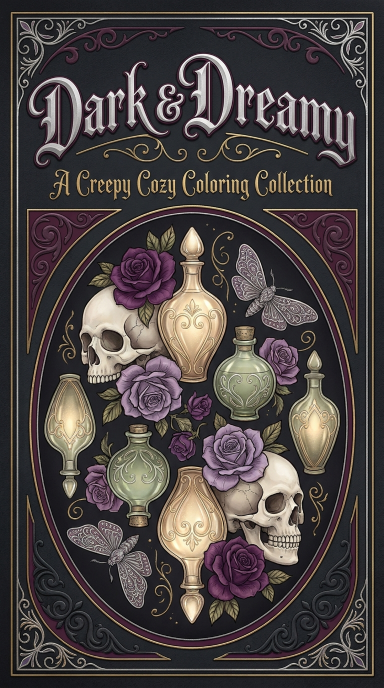

A creepy cozy coloring collection
Dark & Dreamy.
For the gothic soul who colors by candlelight.
30 hand-drawn coloring pages for adults — skulls, apothecary bottles, moths, roses, and moody florals. Instant PDF download, print at home as many times as you like.
Get the PDF — $9.99- ✓ 30 detailed adult coloring pages
- ✓ Print at home, unlimited copies
- ✓ Instant download after checkout

Made for slow, quiet coloring.
Pour a glass of something warm, turn the lamps low, and disappear into thirty richly detailed pages. Ornate skulls, twining roses, apothecary bottles that catch the light, moths on delicate wings. Every page is designed for the goth-at-heart who needs their coloring time to feel like a small, sacred ritual.
What's inside
- 30 detailed coloring pages (single-sided, print-ready)
- Themes: skulls, apothecary jars, moths, gothic florals, moody botanicals
- Standard letter size — prints on any home printer
- PDF file, download once, print forever
Take it home — $9.99
One-time payment. Instant PDF download.
Get the PDF — $9.99Secure checkout by Stripe. Apple Pay, card, or Link.
FAQ
How do I get the file?
After checkout you'll land on a thank-you page with a download button. The PDF is also emailed if you use email checkout.
Can I print it at home?
Yes — designed for standard letter paper on any home printer. Print as many copies as you want, for personal use.
Refund policy?
Because it's an instant digital download, all sales are final. If the file won't open, email hello@grissompress.com and we'll fix it.